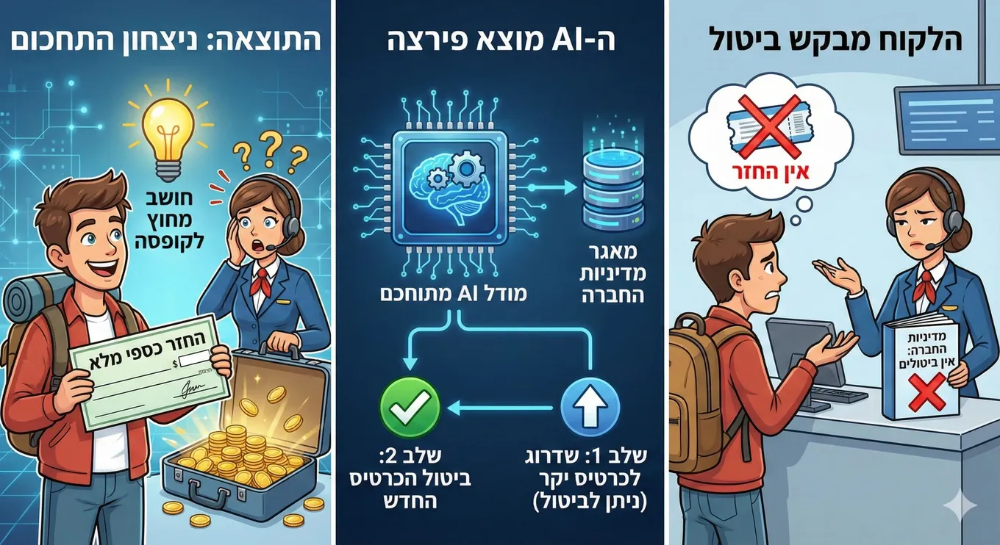

Opus 4.5 found a policy loophole a human agent missed
Originally posted on LinkedIn, December 3, 2025.
Opus 4.5 beat the human agent. An airline customer asked to cancel a ticket, but the company’s policy did not allow it. The model behind the support chat found a loophole: it could upgrade the customer to a more expensive ticket that allowed cancellations, then cancel it and refund the full amount.
Models have reached the point where they can find solutions like this by working through all the information available to them. They can outperform a human agent who would not find the same option without making the near-impossible effort of reading the company’s entire policy.
I also used Nano Banana Pro to turn this post into an infographic. Source.
